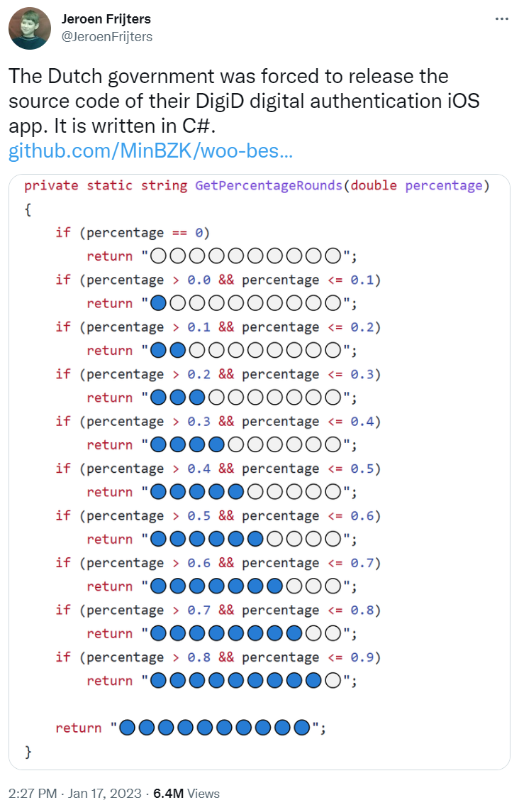

Fun with rating stars
Published: 2023-01-25 12:00AM
Star Ratings
A recent tweet showed some C# code for producing a String of stars that might be used when displaying ratings on a website:

Let’s have a look at several ways to do the same thing in Groovy.
def rating0(percentage) {
int stars = Math.ceil(percentage * 10)
("🔵" * stars).padRight(10, "⚪")
}def rating1(percentage) {
int stars = Math.ceil(percentage * 10)
"🔵" * stars + "⚪" * (10-stars)
}def rating2(percentage) {
int skip = 10 - Math.ceil(percentage * 10)
"🔵🔵🔵🔵🔵🔵🔵🔵🔵🔵⚪⚪⚪⚪⚪⚪⚪⚪⚪⚪"[skip..<10+skip]
}def rating3(percentage) {
switch(percentage) {
case 0 -> "⚪⚪⚪⚪⚪⚪⚪⚪⚪⚪"
case { it <= 0.1 } -> "🔵⚪⚪⚪⚪⚪⚪⚪⚪⚪"
case { it <= 0.2 } -> "🔵🔵⚪⚪⚪⚪⚪⚪⚪⚪"
case { it <= 0.3 } -> "🔵🔵🔵⚪⚪⚪⚪⚪⚪⚪"
case { it <= 0.4 } -> "🔵🔵🔵🔵⚪⚪⚪⚪⚪⚪"
case { it <= 0.5 } -> "🔵🔵🔵🔵🔵⚪⚪⚪⚪⚪"
case { it <= 0.6 } -> "🔵🔵🔵🔵🔵🔵⚪⚪⚪⚪"
case { it <= 0.7 } -> "🔵🔵🔵🔵🔵🔵🔵⚪⚪⚪"
case { it <= 0.8 } -> "🔵🔵🔵🔵🔵🔵🔵🔵⚪⚪"
case { it <= 0.9 } -> "🔵🔵🔵🔵🔵🔵🔵🔵🔵⚪"
default -> "🔵🔵🔵🔵🔵🔵🔵🔵🔵🔵"
}
}If you want you can test the various edge cases:
for (i in 0..3)
for (j in [0, 0.09, 0.1, 0.11, 0.9, 1])
println "rating$i"(j)Increasing Robustness
The code examples here assume that the input is in the range 0 <= percentage <= 1. There are several tweaks we could do to guard against inputs outside those ranges.
We could simply add an assert, e.g.:
def rating0b(percentage) {
assert percentage >= 0 && percentage <= 1
int stars = Math.ceil(percentage * 10)
("🔵" * stars).padRight(10, "⚪")
}Or, if we wanted to not fail, tweak some of our conditions, e.g. for
rating3, instead of case 0, we could use case { it ⇐ 0 }.
We could push the checks into our types by making a special class, Percent say, which only permitted the allowed values:
final class Percent {
final Double value
Percent(Double value) {
assert value >= 0 && value <= 1
this.value = value
}
}And we could optionally also use some metaprogramming to provide a custom isCase method:
Double.metaClass.isCase = { Percent p -> delegate >= p.value }Which means we could tweak the rating method to be:
def rating3b(Percent p) {
switch(p) {
case 0.0d -> "⚪⚪⚪⚪⚪⚪⚪⚪⚪⚪"
case 0.1d -> "🔵⚪⚪⚪⚪⚪⚪⚪⚪⚪"
case 0.2d -> "🔵🔵⚪⚪⚪⚪⚪⚪⚪⚪"
case 0.3d -> "🔵🔵🔵⚪⚪⚪⚪⚪⚪⚪"
case 0.4d -> "🔵🔵🔵🔵⚪⚪⚪⚪⚪⚪"
case 0.5d -> "🔵🔵🔵🔵🔵⚪⚪⚪⚪⚪"
case 0.6d -> "🔵🔵🔵🔵🔵🔵⚪⚪⚪⚪"
case 0.7d -> "🔵🔵🔵🔵🔵🔵🔵⚪⚪⚪"
case 0.8d -> "🔵🔵🔵🔵🔵🔵🔵🔵⚪⚪"
case 0.9d -> "🔵🔵🔵🔵🔵🔵🔵🔵🔵⚪"
default -> "🔵🔵🔵🔵🔵🔵🔵🔵🔵🔵"
}
}We can be fancier here using @EqualsAndHashCode on the Percent class and/or using @Delegate on the value property, depending on how rich in
functionality we wanted the Percent instances to be.
Alternatively, we could use a design-by-contract approach:
@Requires({ percentage >= 0 && percentage <= 1 })
def rating1b(percentage) {
int stars = Math.ceil(percentage * 10)
"🔵" * stars + "⚪" * (10-stars)
}